Combining Components
This tutorial shows you how to combine Components - combining Components allows you to create some amazing effects and thus complex Entities can be created. This tutorial is going to show how to create some sort of collectables, the final result of this tutorial is show below.
Before you get started you should be aware that we work with Schematyc in this tutorial, so if you are unfamiliar with Schematyc or maybe just need a memory refresh then you can find the Schematyc documentation here.
We are also going to use the following components in this tutorial: Tutorial - Mesh Component, Tutorial - Rigidbody Component, and the Tutorial - SensorVolume Component. Hence, we recommend that you familiarise yourself with each of those before attempting this tutorial.
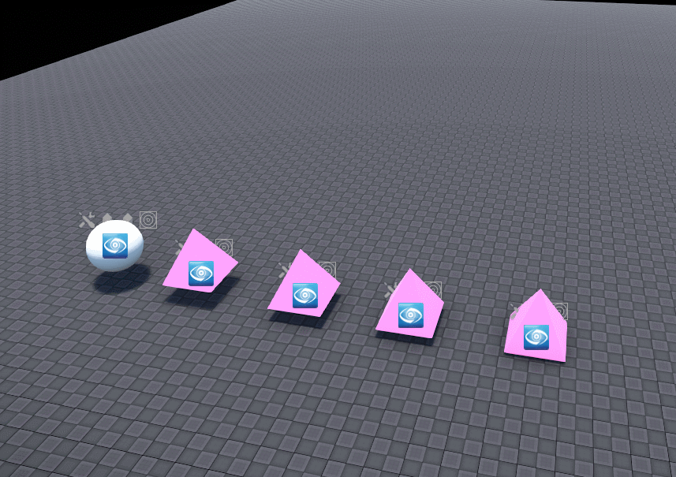
First we have to create two different entities, one for the player (in this case the ball) and the other for the actual collectibles (in this case the pink pyramids).
- Open the Asset Browser Tools -> Asset Browser and right click into the window. Create two new "Schematyc Entities" one named "collectible" the other "collector."
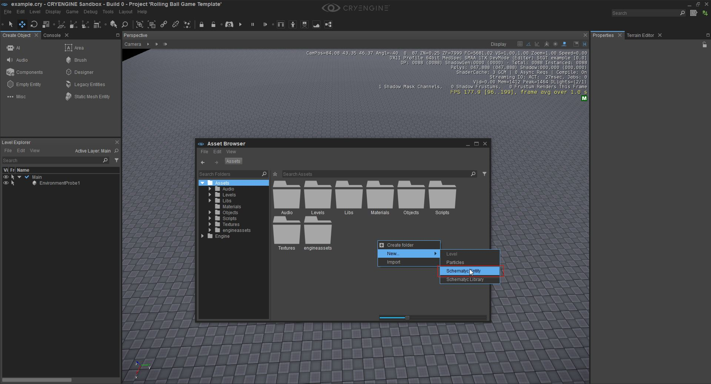
- Double click on the "collectible" entity which should open up the Schematyc Editor.
- In the Schematyc Editor click on the "Add" button (middle top) and select "Component" in the context menu. Add a mesh component and a sensor volume.
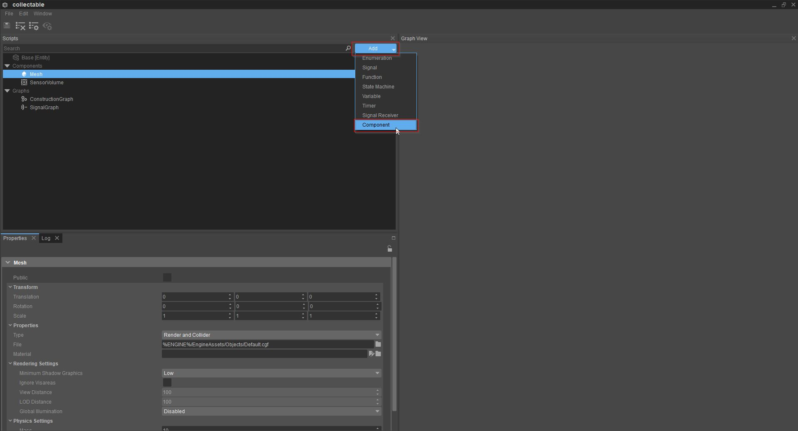
- Every component of this entity now can be edit in the "Properties" tab after selecting the component in the "Scripts" view. Select any geometry you want to have for your collectable in the mesh component and add the "Default" tag as Listener to the sensor volumes.
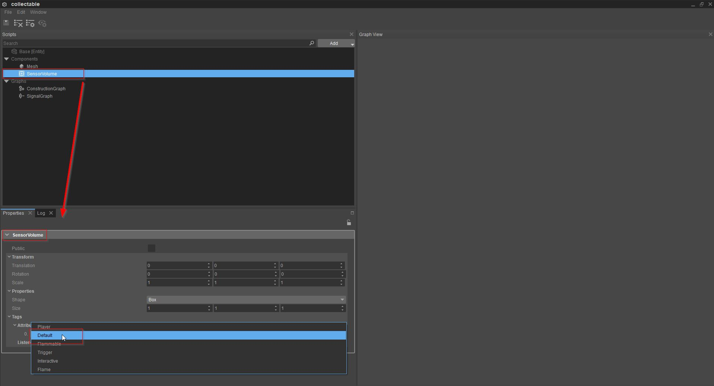
- Click on the "Signal Graph" in the Graphs category below the components. Now right click in the "Graph View" window and type in "Entering" into the search bar of the context menu to add the node. This node will always be triggered when some other sensor volume with the tag "Default" will intersect with this one. If this node gets triggered we want to hide the entity since it was collected.
- Add the next node called "SetVisible" and connect the Entering node to it. That's all the logic we need to hide the entity on contact with the collector.
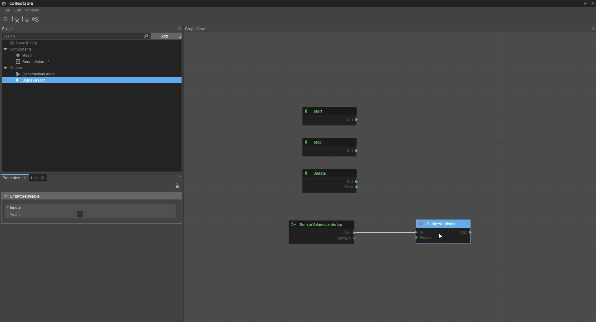
- The collectable is finished and we can save and close the Schematyc editor.
- Open the Asset Browser again and double click on the collector entity which was created at the beginning of this tutorial.
- In the Schematyc Editor add the following component to the entity as we did it before, a Mesh component to have a visual representation in the level, a Rigidbody component so the entity can move around, a sensor volume to get the signal when we hit a collectable, a Debug Draw component to draw the points on the screen.
- Change the geometry of the mesh component to anything and add the "Default" tag to the attribute and listener in the sensor volume.
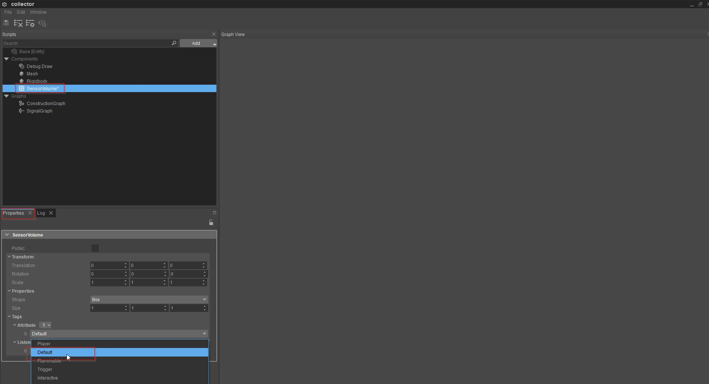
- Since the number of collected entities should be displayed on the screen we need to add a variable to the entity. This variable can store values and can be changed at run time. Click on the Add button (top middle) and select "Variable" and name the variable "points".
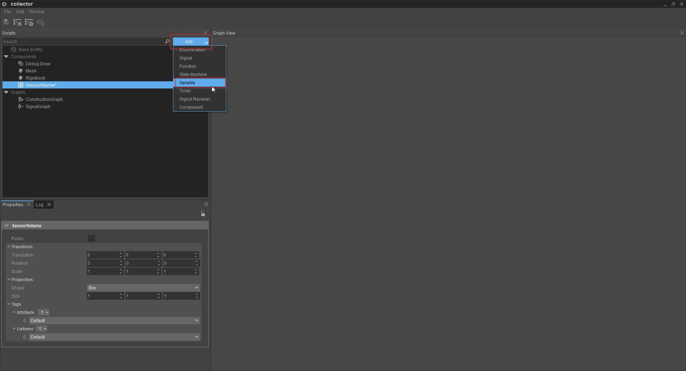
- Click on the variable to select it and change the "Type" value in the "Properties" tab by clicking on the search icon next to it. Select "Int32" which means that this variable now can only hold integer values, since we want to count the number of collected collectables.
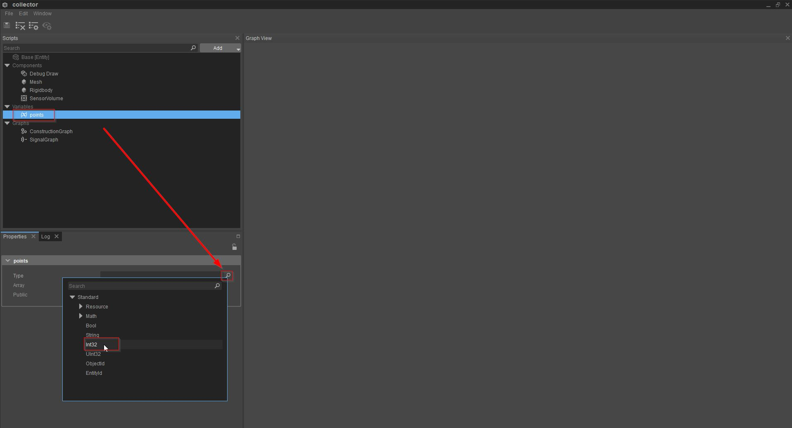
- Click on the "SignalGraph" below the variable to start creating the logic for this entity. Add the "Entering" node of the sensor volume again so the entity can react if it hits the collectable.
- Create a new node called "Add" this node should be from the type "Int32" since that's what we want to add to our previously created variable from the same type.
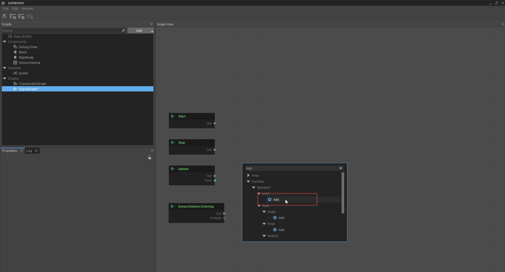
- We won't to always add plus 1 to our variable so we have to get the current amount of the variable add plus 1 and set the new value to the variable. There are getter and setter functions in Schematyc to manipulate variables. Create a new node and search for the name of the variable and you can see a get node for the variable and a set node, create both.
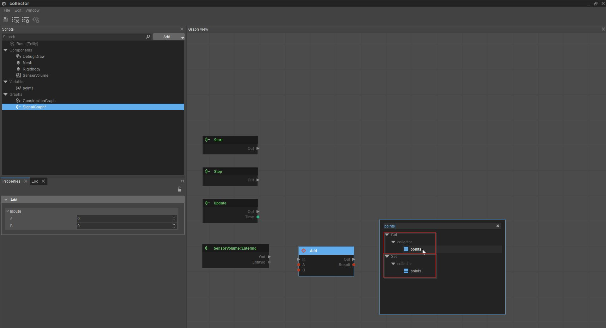
- Connect the arrow of the "Entering" node with the arrow of the add node which means that the add function will be executed after an entering event happened. Since we want to add plus one to the variable connect the red dot of the "Get[points]" node with the first red dot (A) of the "Add" node. Dots always represent data, like the variable in this example, and arrows always represent the execution order of the nodes. Now connect the "Add" node with the "Set[points]" node and connect the result with the value.
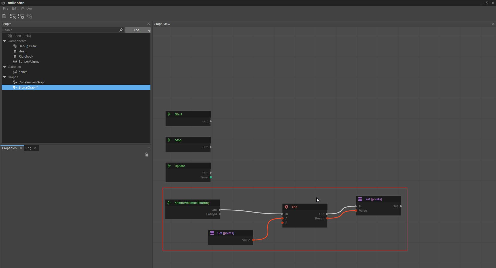
- We only filled one of the input nodes of the "Add" node, since we only want to add 1 to the variable click on the add node and type in 1 into the field with the name B. Now the input of "A" will be added to the input of "B".
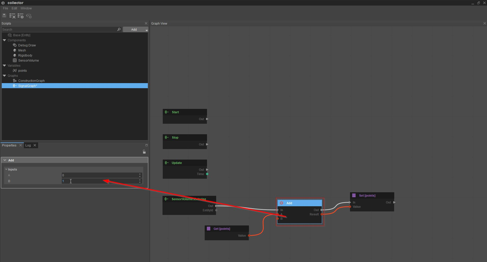
- Next, we want to create the logic for drawing the points as text on the screen. Add a node called "Draw Text", this function node draws a string (text) to the screen. Since the points variable is not a text but a number we have to change the type from Int32 to string. There is a function called "ToString" which exactly does that. Search for that function and add the node for "Int32" to the graph.
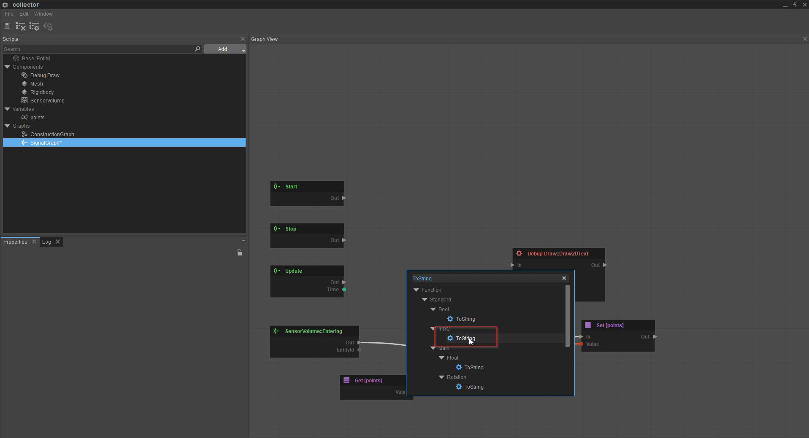
- We want to draw the points every time so we are going to use the already existing "Update" node for that. Update means that this node will be called every frame. Connect the "Update" node with the "ToString" and the "ToString" node with the "DrawText", since we have to convert the type of the variable before we can draw it as text. After that connect the "Get[points]" node with the "ToString" node and pass the result to the "DrawText" node.
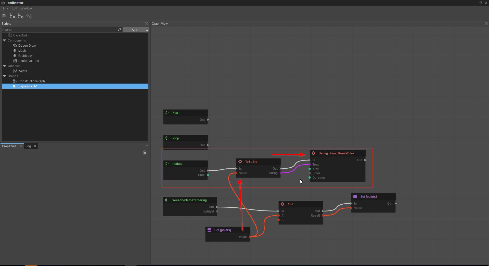
- Save the entity and close the Schematyc editor.
- Open the asset browser and drag and drop a collectable entity into the level and also drag and drop a collector entity into the scene and place it above the collectable.
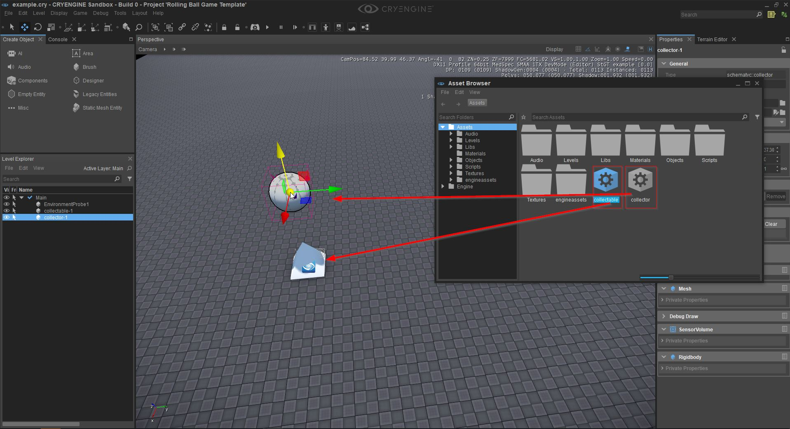
- Hit the play button with the controller in it at the top or press CTRL + G on your keyboard and you should see the collector falling down and collecting the collectable.
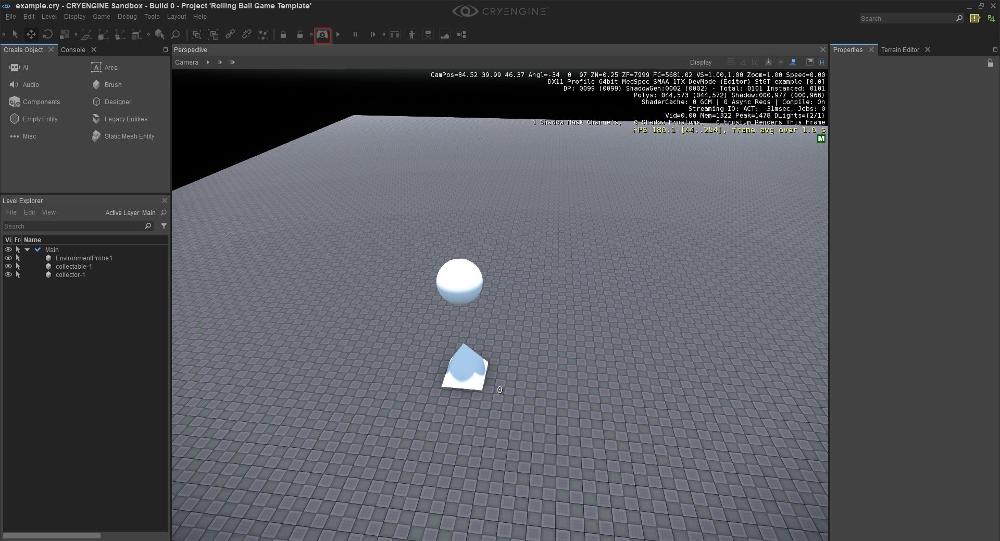
Now you have the final result and maybe an idea of what you can do with multiple components and a little bit of Schematyc. This tutorial off course just scratched the surface of Schematyc and the functionality of the components. I highly recommend to just play around and test out things to understand the systems better.